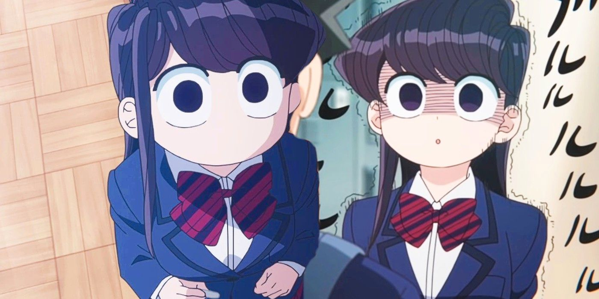

Hitohito Tadano is an ordinary boy who heads into his first day of high school with a clear plan: to avoid trouble and do his best to blend in with others. Unfortunately, he fails right away when he takes the seat beside the school's madonna—Shouko Komi. His peers now recognize him as someone to eliminate for a chance to sit next to the most beautiful girl in class.
Gorgeous and graceful with long, dark hair, Komi is universally adored and immensely popular despite her mysterious persona. However, unbeknownst to everyone, she has crippling anxiety and a communication disorder which prevents her from wholeheartedly socializing with her classmates
When left alone in the classroom, a chain of events forces Komi to interact with Tadano through writing on the blackboard, as if in a one-way conversation. Being the first person to realize she cannot communicate properly, Tadano picks up the chalk and begins to write as well. He eventually discovers that Komi's goal is to make one hundred friends during her time in high school. To this end, he decides to lend her a helping hand, thus also becoming her first-ever friend.
Written by MAL Rewrite]| No | Character | Voice Actor |
|---|---|---|
| 1 | Tadano Hitohito | Kajiwara Gakuto |
| 2 | Komi Shouko | Koga Aoi |
| 3 | Osana Najimi | Murakawa Rie |
| 4 | Komi Shousuke | Enoki Junya |
| 5 | Tadano Hitomi | Uchida Maaya |
| No | Character | Voice Actor |
♥Thanks for watching and subcribe my channal......♥
| Telegram Link → | .♥click here♥ |
| Facebook link → | ♥click here♥ |